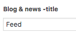
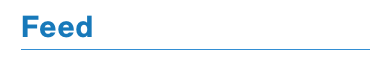
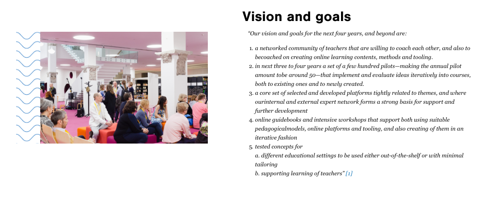

Description
The home page is where the user first arrives when they come to the site. When editing the home page, you have quite a few things that you can edit on the page.
Title

Editing the title won't change anything yet. For changing the navigation bar links, you have to change the navigation menu, as seen here.
Theta Image URL

This is the URL for the 360 degree image shown on the front page. It needs to be from the Theta 360 site to work.
Keywords: 360, VR, Virtual Reality, Theta, 3D, viewer
What is A!OLE-content

corresponds to

Keywords: front page text, homepage text
Email-form introduction

This corresponds to the email gathering form (that at the time of launch was hidden, hence no screenshot)
Keywords: email form, subscription, e-mail
For teachers

corresponds to

For all

corresponds to

Keywords: for teachers, for all
Blog & news -Title
 corresponds to 
Keywords: Feed title, blog title, blog, feed
Pilots showcase section
The pilots showcase allows you to choose as many pilots as you want from all the existing pilots in Wordpress. You can reorder the pilots by dragging & dropping their names on the right side selection box.

corresponds to

Keywords: showcase, pilot showcase, pilots
Why online learning? -section

corresponds to
Keywords: why online learning, changing educational culture, front page post
Why A!OLE? -section

corresponds to
